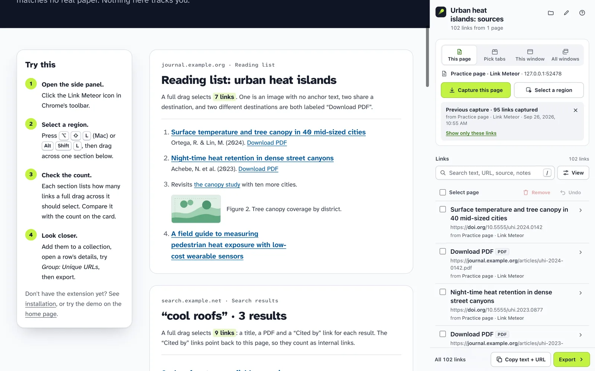

Development build · Not yet in the Chrome Web Store
Install Link Meteor
Until Link Meteor is published in the Chrome Web Store, you can load the development build into desktop Chrome yourself. It takes about two minutes and needs no account.
Before you start
Link Meteor is built for desktop Google Chrome. It doesn't run on phones or tablets, and there are no Firefox or Safari versions.
What has been tested so far. The 0.2.0 build was exercised in automated Chrome for Testing on macOS, on synthetic test pages. The project owner also loaded that build in everyday Google Chrome and reported that it worked; the specific steps were not itemized. The 0.2.1 audit checked the workbench, exports and local site; its full capture and permission rerun is still pending. The owner’s 0.2.0 report does not establish human testing of 0.2.1. Link Meteor declares Chrome 116 as its oldest supported version, but that version, Windows, Linux, native permission prompts and screen readers have not been independently verified. If something doesn't work for you, please report it.
A development build is installed with Chrome's Developer mode. That's a normal Chrome setting for loading extensions from a folder on your computer; it doesn't change anything else about your browser.
Download
Link Meteor 0.2.1, development build · 189 KB ZIP
Download link-meteor-0.2.1.zipSHA-256 231f454f60a7aba45ad6834b559268e1ddaabc66304ce55be4a9e783a7d219e9
To check the file, compare its SHA-256 with the value above. On a Mac, run shasum -a 256 followed by the file's path in Terminal; on Windows, run certutil -hashfile with the path and SHA256 in Command Prompt.
Or build it from source
The source is on GitHub. With Node.js 22 or newer, run npm run build in the project folder; there are no packages to install. Then load the dist folder in the next step.
Load it into Chrome
- Unzip the download into a folder you'll keep. Chrome loads the extension from that folder every time it starts, so don't delete or move it afterward.
- Open
chrome://extensions. Type it into the address bar and press Enter. - Turn on Developer mode. The switch is at the top right of the Extensions page.
- Choose Load unpacked and select the unzipped folder, the one that contains
manifest.json. - Pin it. Open the puzzle-piece menu in Chrome's toolbar and pin Link Meteor so its icon stays visible.
Chrome may occasionally remind you that developer-mode extensions are turned on. That reminder is expected for any extension loaded this way.
First capture
- Open the practice page, a page of synthetic links made for trying Link Meteor.
- Click the Link Meteor icon to open its side panel beside the page.
- Press ⌥ ⇧ L on a Mac, or Alt Shift L on Windows and Linux, then drag across the reading list. Choose Add to collection and watch the links arrive in the panel.

Chrome will ask for extra permission only if you use a feature that needs it, such as capturing several tabs at once. The privacy page lists every permission and why it's asked for.
Keyboard shortcut
The default shortcut for selecting a region is ⌥ ⇧ L on a Mac and Alt Shift L elsewhere. If another extension already uses it, Chrome leaves Link Meteor's shortcut unassigned, and the side panel says Not set.
To change it, open chrome://extensions/shortcuts, or choose Change next to the shortcut in Link Meteor's side panel. You can always use the Select a region button or Chrome's right-click menu instead.
Update or remove
Update
Download the new build and replace the contents of your Link Meteor folder with it. Then open chrome://extensions, press the reload button on Link Meteor's card, and reload any pages you had open. Your collections are kept.
Remove
Choose Remove on Link Meteor's card in chrome://extensions. This deletes your saved collections, because they are stored only in this browser. Export anything you want to keep first.
Troubleshooting
- Nothing happens on a page
- Chrome doesn't let extensions run on its own pages (like
chrome://addresses), the Chrome Web Store or incognito windows. On ordinary pages that were already open when you installed or updated, reload the page once. - The shortcut doesn't respond
- Check
chrome://extensions/shortcuts. Another extension or your operating system may be using the same keys. - Some links weren't captured
- Links inside frames from other sites and closed shadow roots can't be read, and content that hasn't loaded yet isn't there. The capture report says when frames were skipped. See limits and coverage.
- A multi-tab capture says Access denied
- Chrome asked whether Link Meteor could read those sites, and the request was declined or the permission was later removed. Capture again to be asked again.